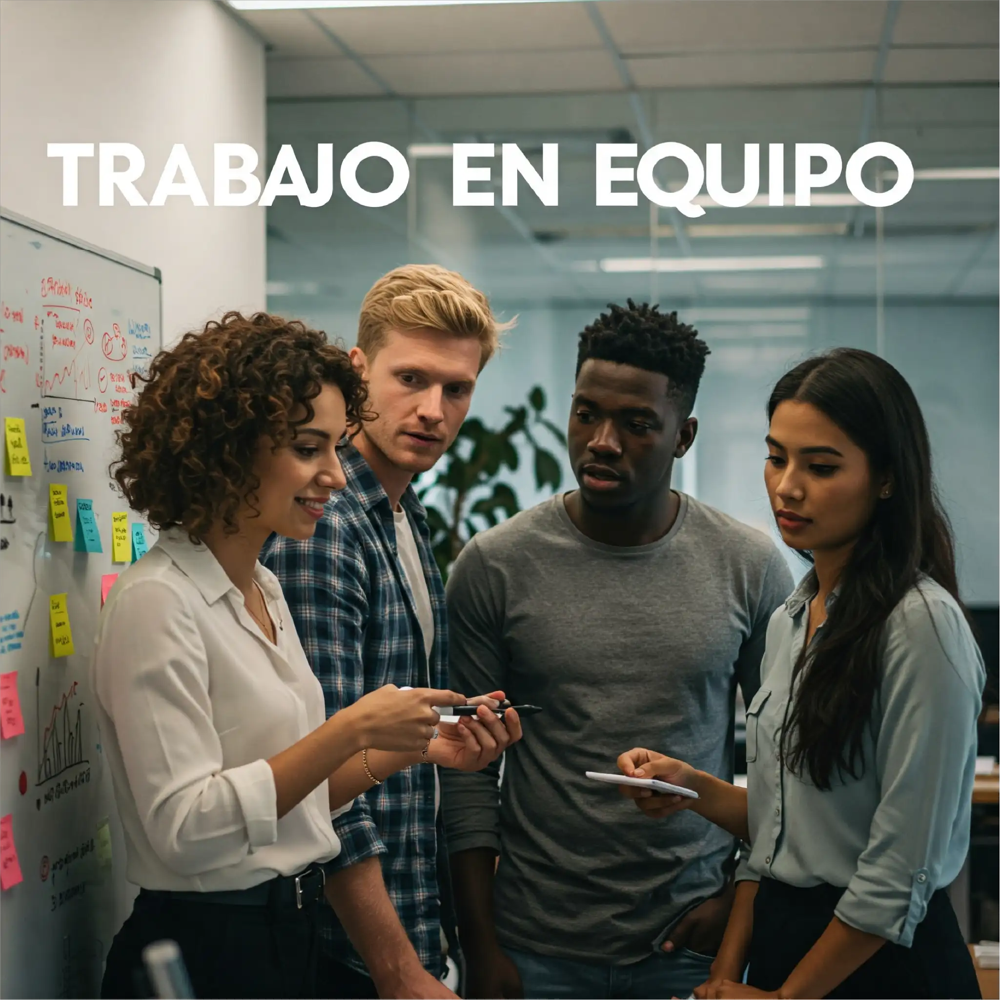

Curso Online de Trabajo en Equipo para Empresas en Iquique
¡PRONTO!
Modalidad 100% Virtual (Online Asincrónico)
Descripción del Curso para Empresas en Iquique
Este curso online está diseñado para empresas en Iquique que buscan fortalecer la colaboración y el clima laboral. Aprenderás técnicas efectivas para mejorar la comunicación, resolver conflictos y potenciar el liderazgo dentro de tus equipos.
Modalidad de Ejecución del Curso
100% Virtual (Online Asincrónico)
Este curso se imparte de manera completamente virtual, similar a nuestra exitosa modalidad del curso "Aprender a Aprender". El proceso de aprendizaje se centra en el autoestudio a través de una variedad de recursos, incluyendo videos y otros materiales didácticos disponibles en nuestra plataforma en línea.
Malla Curricular del Curso
Módulo 1: Fundamentos del Trabajo en Equipo
- Integración y presentación de objetivos comunes.
- Identificación y comprensión de los roles dentro del equipo.
- Desarrollo de sólidos vínculos de confianza interpersonal.
- Establecimiento y seguimiento de normas de equipo efectivas.
- Definición y alineación de metas dentro del equipo.
Módulo 2: Dinámicas y Herramientas para la Colaboración
- Mejora de la comunicación interpersonal y el feedback constructivo.
- Estrategias efectivas para la resolución de conflictos internos.
- Técnicas para abordar y mantener el entusiasmo y la motivación del equipo.
- Importancia y métodos para celebrar los logros y el éxito colectivo.
A Quiénes Se Dirige el Curso
Este curso de trabajo en equipo está especialmente diseñado para empresas en Iquique que reconozcan la necesidad de proporcionar a su personal herramientas y técnicas para mejorar la colaboración. Su objetivo principal es fortalecer el clima laboral y fomentar un trabajo en conjunto más eficiente y productivo dentro de la organización.
Curso Disponible Para
Persona o Empresa
Aprobación y Certificación
Al completar exitosamente el Curso de Trabajo en Equipo, los alumnos recibirán un Diploma que Certifica los conocimientos y habilidades adquiridas en esta área fundamental para el desarrollo organizacional.
Consultar Inscripción